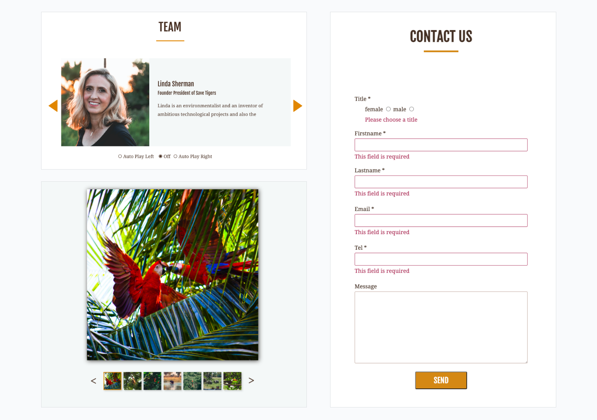

Save Tigers ist Informations- und Spendenaufruf Website einer fiktiven gemeinnützigen Organisation, welche sich für den Schutz der Tiger engagiert. Ziel dieses Projektes war es, Interaktionen mit reinem Vanille Javascript (ohne Libraries und Frameworks) zu erstellen.
Technologien
- HTML
- CSS
- Vanilla JS

Screendesign
Das Screendesign wurde mit Adobe XD erstellt. Es gab eine Home und drei Unterseiten welche jeweils für das Format Phone, Tablet und Desktop erstellt wurden. erstellt wurden.

Interaktionen
Mit Vanille Js wurden zwei Slider (mit der Möglichkeit zur automatischen Wiedergabe in beide Richtungen), eine Galerie und die Formularvalidierung umgesetzt.
